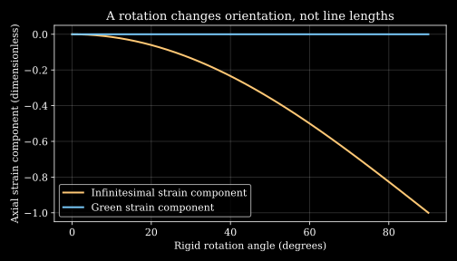

2. Continuum kinematics and constitutive laws
An image sequence shows a patch of heart wall moving, turning and changing shape. Which part of that motion stretches the tissue? Which part merely changes its orientation? A stress law that confuses those two effects can predict a force simply because the camera has turned.
Follow a small myocardial patch and, separately, a packet of blood. Both consist of identifiable material particles. Both can move and deform. Their kinematics can be described by the same mathematical objects, but their mechanical responses need different constitutive laws. Kinematics describes the motion; a constitutive law states how the material responds to it. Neither alone determines a complete physical solution.
Mass is a measure; density needs an assumption L2 · 01:10 L4 · 00:27
Let $\mathcal B_0\subset\mathbb R^3$ be a reference region, whose material particles are labeled by $\mathbf X$. A measurable subregion $A$ has volume $|A|$, in $\mathrm{m^3}$, and mass $m(A)$, in kg. Mass and volume are different measures. Writing
\[m(A)=\int_A\rho_0(\mathbf X)\,dV\]introduces a reference density $\rho_0$, in $\mathrm{kg/m^3}$. This representation requires a mathematical condition: a zero-volume set must have zero mass. That is absolute continuity of the mass measure with respect to volume. For the usual finite or sigma-finite measures, the Radon–Nikodym theorem then supplies a measurable density, unique up to sets of volume zero. Scott Sheffield's MIT notes, slides 12–14, state the absolute-continuity hypothesis. Existence of an integrable density does not by itself provide continuity, differentiability, or a preferred value at every point.
A point mass shows why the hypothesis matters. If $m(A)=M$ whenever $A$ contains a fixed point and zero otherwise, a singleton has zero volume but mass $M\gt0$. No ordinary volume density can reproduce that measure: the integral of an integrable function over a singleton is zero. A continuum density is a model for distributed matter; an ideal point mass uses a different measure. The classical calculations below additionally assume enough smoothness for the indicated derivatives.
A motion is a map $\mathbf x=\boldsymbol\chi(\mathbf X,t)$ from the reference region into the current region $\mathcal B_t$. Assume it is smooth, one-to-one, orientation-preserving and locally invertible over the interval studied. These assumptions exclude interpenetration and singular collapse in this elementary model. The deformation gradient and local volume ratio are
\[\mathbf F=\operatorname{Grad}_{\!X}\boldsymbol\chi,\qquad J=\det\mathbf F\gt0,\qquad dv=J\,dV.\]For every material subbody $A$, conservation of its mass gives
\[\int_A\rho_0\,dV=\int_{\chi(A,t)}\rho(\mathbf x,t)\,dv=\int_A\rho(\chi(\mathbf X,t),t)J\,dV.\]Because this holds for all such $A$, localization yields $\rho(\chi(\mathbf X,t),t)J=\rho_0(\mathbf X)$ almost everywhere, and pointwise where the fields are continuous. Conserving the total mass of just one whole region would not suffice for that localization. Uniform-density shorthand $m=\rho V$ also cannot replace the integral when density varies.
If $J=1.10$ and $\rho_0=1050\,\mathrm{kg/m^3}$, the same material has $\rho=954.545\,\mathrm{kg/m^3}$. If material incompressibility is imposed, $J=1$ and a particle's density remains its reference value. This does not require a heart chamber's enclosed blood volume to remain constant: wall material and cavity contents occupy different regions, with blood entering and leaving through valves.
Follow a particle or inspect a fixed position L2 · 04:22 L4 · 10:39
The velocity of particle $\mathbf X$ is $\partial_t\chi(\mathbf X,t)$ with its label held fixed. Expressing the same velocity in current coordinates gives the spatial field
\[\mathbf v(\mathbf x,t)=\left.\frac{\partial\chi}{\partial t}\right|_{\mathbf X=\chi^{-1}(\mathbf x,t)}.\]For a scalar field $f(\mathbf x,t)$, its value on the particle is $f(\chi(\mathbf X,t),t)$. Applying the chain rule while keeping $\mathbf X$ fixed gives the material derivative
\[\frac{Df}{Dt}=\left.\frac{\partial f}{\partial t}\right|_{\mathbf x}+\sum_{j=1}^3v_j\frac{\partial f}{\partial x_j}=\partial_t f+\mathbf v\cdot\nabla f.\]The same formula applies componentwise to vectors in a fixed Cartesian basis. Define $L_{ij}=\partial v_i/\partial x_j$; then material acceleration is $\mathbf a=\partial_t\mathbf v+\mathbf L\mathbf v$. A time-independent velocity field can therefore accelerate particles. “Steady” refers to observations at a fixed spatial location.
Consider the original motion
\[x_1=e^{kt}X_1,\qquad x_2=e^{-kt}X_2,\qquad x_3=X_3,\]where $k$ has units $\mathrm{s^{-1}}$. This is globally invertible for every finite $t$, equals the identity at $t=0$, and preserves volume. Material differentiation gives $v_1=k e^{kt}X_1=kx_1$, $v_2=-k e^{-kt}X_2=-kx_2$, and $v_3=0$. Hence the spatial velocity $\mathbf v=(kx_1,-kx_2,0)$ has $\partial_t\mathbf v=0$, but
\[\mathbf a=\begin{pmatrix}k&0&0\\0&-k&0\\0&0&0\end{pmatrix}\begin{pmatrix}kx_1\\-kx_2\\0\end{pmatrix}=\begin{pmatrix}k^2x_1\\k^2x_2\\0\end{pmatrix}.\]With $k=2\,\mathrm{s^{-1}}$ at $(x_1,x_2)=(0.01,0.02)\,\mathrm m$, acceleration is $(0.04,0.08)\,\mathrm{m/s^2}$. Directly differentiating the material motion twice gives the same result. The field also has divergence $k-k=0$: incompressibility does not imply zero acceleration.
Choosing a regular motion matters. A formula such as $x=tX^2$ needs a restricted sign domain to be one-to-one, fails at $t=0$, and requires dimensional coefficients if $x,X,t$ carry physical units. Algebraic examples are legitimate only on their stated domains. The exponential construction avoids those particular singularities; it is still an illustrative motion, not a measured myocardial deformation.
The deformation gradient maps local material lines L2 · 09:15 L4 · 17:27
For neighboring reference points, differentiability gives $\chi(\mathbf X+d\mathbf X,t)-\chi(\mathbf X,t)=\mathbf F\,d\mathbf X+o(|d\mathbf X|)$. Thus $d\mathbf x=\mathbf F\,d\mathbf X$ is the first-order relation between infinitesimal material line vectors. In Cartesian coordinates, $F_{iA}=\partial\chi_i/\partial X_A$. The row index refers to the current vector component, the column index to the reference component. This is a derivative map, not division of two vectors.
For a finite distance in a nonuniform deformation, multiplying the endpoint separation by one local $\mathbf F$ is generally insufficient. One must integrate the varying derivative along the reference path. Likewise, $J\gt0$ ensures local invertibility under the inverse-function theorem, but global one-to-one behavior is an additional condition; a map can be locally regular while different distant material points reach the same spatial position.
A simple shear is $\chi(\mathbf X)=(X_1+\gamma X_2,X_2,X_3)$, where $\gamma$ is dimensionless. Its matrix is
\[\mathbf F=\begin{pmatrix}1&\gamma&0\\0&1&0\\0&0&1\end{pmatrix},\qquad J=1.\]A line initially along $\mathbf e_2$ becomes $(\gamma,1,0)$ times its original length. It tilts and stretches by $\sqrt{1+\gamma^2}$, while a line along $\mathbf e_1$ keeps its length. Unit volume can be preserved even when selected lines stretch. The determinant measures volume change, not every aspect of shape change.
For the exponential motion, $\mathbf F=\operatorname{diag}(e^{kt},e^{-kt},1)$. One direction stretches, another contracts, and their volume factors cancel. These examples already show why a scalar “amount of deformation” cannot characterize all mechanical effects on an oriented tissue patch.
Separate stretch from rotation before measuring strain L2 · 16:14 L4 · 23:32
Define the right and left Cauchy–Green tensors $\mathbf C=\mathbf F^T\mathbf F$ and $\mathbf B=\mathbf F\mathbf F^T$. Both are symmetric positive definite when $\mathbf F$ is invertible: for nonzero $\mathbf a$, $\mathbf a\cdot\mathbf C\mathbf a=|\mathbf F\mathbf a|^2\gt0$. Their eigenvalues are squared principal stretches. A principal stretch is a length ratio, not a squared length ratio.
The positive square roots $\mathbf U=\sqrt{\mathbf C}$ and $\mathbf V=\sqrt{\mathbf B}$ permit the polar decompositions $\mathbf F=\mathbf R\mathbf U=\mathbf V\mathbf R$. To see the first, set $\mathbf R=\mathbf F\mathbf U^{-1}$. Then $\mathbf R^T\mathbf R=\mathbf U^{-1}\mathbf C\mathbf U^{-1}=\mathbf I$ and $\det\mathbf R=1$ because $\det\mathbf F\gt0$. Thus $\mathbf R$ is a proper rotation; $\mathbf U$ stretches material directions before that rotation. $\mathbf B=\mathbf V^2$, not $\mathbf V$ itself.
The Green–Lagrange strain $\mathbf E=(\mathbf C-\mathbf I)/2$ measures a change of the reference metric. Indeed,
\[|d\mathbf x|^2-|d\mathbf X|^2=d\mathbf X\cdot(\mathbf F^T\mathbf F-\mathbf I)d\mathbf X=2d\mathbf X\cdot\mathbf E\,d\mathbf X.\]In current coordinates the same difference is $2d\mathbf x\cdot\mathbf e\,d\mathbf x$, where the Euler–Almansi strain is $\mathbf e=(\mathbf I-\mathbf B^{-1})/2$. The two tensors describe the same length change using different line vectors; their numerical components need not match.
For simple shear at $\gamma=0.4$,
\[\mathbf C=\begin{pmatrix}1&0.4&0\\0.4&1.16&0\\0&0&1\end{pmatrix},\qquad\mathbf E=\begin{pmatrix}0&0.2&0\\0.2&0.08&0\\0&0&0\end{pmatrix}.\]The principal stretches are $\sqrt{1+\gamma^2/4}\pm\gamma/2$ in the shear plane and 1 out of plane: approximately 0.819804, 1.219804 and 1. Their product is one. $E_{22}=0.08$ records a second-order effect that an infinitesimal shear approximation drops.
A decisive test is a rigid rotation $\mathbf F=\mathbf Q$, with $\mathbf Q^T\mathbf Q=\mathbf I$. It gives $\mathbf E=0$, exactly as unchanged lengths require. If displacement is $\mathbf u=\chi-\mathbf X$, the infinitesimal strain $\boldsymbol\epsilon=\operatorname{sym}\operatorname{Grad}\mathbf u$ instead gives $\boldsymbol\epsilon=(\mathbf Q+\mathbf Q^T)/2-\mathbf I$. A 90-degree rotation about the third axis gives $\epsilon_{11}=\epsilon_{22}=-1$, although no line has shortened. The approximation requires small displacement gradients, including small rotations; small actual stretch alone is insufficient.

A fluid responds to stretching rate, not accumulated stretch alone L2 · 19:08 L4 · 24:01
Differentiate $\mathbf F=\operatorname{Grad}_{X}\chi$ at fixed material label. Commuting derivatives for a smooth motion and applying the chain rule gives
\[\dot{\mathbf F}=\operatorname{Grad}_{X}\mathbf v(\chi(\mathbf X,t),t)=(\nabla_x\mathbf v)\mathbf F=\mathbf L\mathbf F,\qquad\mathbf L=\dot{\mathbf F}\mathbf F^{-1}.\]The dot here follows a material particle. Decompose the velocity gradient into stretching rate $\mathbf D=(\mathbf L+\mathbf L^T)/2$ and spin $\boldsymbol\Omega=(\mathbf L-\mathbf L^T)/2$. Both have units $\mathrm{s^{-1}}$. Since a material line satisfies $\dot{d\mathbf x}=\mathbf Ld\mathbf x$, its squared-length rate is
\[\frac{d}{dt}|d\mathbf x|^2=2d\mathbf x\cdot\mathbf Dd\mathbf x.\]The skew part contributes zero to this scalar. For the current unit line direction $\mathbf n=d\mathbf x/|d\mathbf x|$, the logarithmic length rate is $\mathbf n\cdot\mathbf D\mathbf n$. This gives a physical meaning to the symmetric velocity gradient without calling every velocity gradient “shear.”
Green strain rate is not generally equal to $\mathbf D$. Differentiating $\mathbf C=\mathbf F^T\mathbf F$ yields $\dot{\mathbf E}=\mathbf F^T\mathbf D\mathbf F$. One rate is a material tensor, the other a spatial tensor. At an instant chosen as the undeformed reference, $\mathbf F=\mathbf I$ and the two coincide; that special coincidence is not an identity for all deformations.
For simple shear velocity $\mathbf v=(sy,0,0)$, $L_{12}=s$ and $D_{12}=D_{21}=s/2$. A useful nonnegative scalar rate is
\[\dot\gamma=\sqrt{2\mathbf D:\mathbf D},\qquad\mathbf A:\mathbf B=\sum_{i,j}A_{ij}B_{ij}.\]Because the two off-diagonal entries each contribute $s^2/4$, this gives $\dot\gamma=|s|$, not $|s|/2$. For the extensional example $\mathbf D=\operatorname{diag}(k,-k,0)$, it gives $2|k|$. A scalar invariant allows comparison of rates; it does not mean the two flows impose identical directional stresses on a structured material.
Changing observer must not create a material response L2 · 23:42 L4 · 30:02
Let another observer assign positions $\mathbf x^*=\mathbf c(t)+\mathbf Q(t)\mathbf x$, where $\mathbf Q^T\mathbf Q=\mathbf I$ and $\det\mathbf Q=1$. We keep the same material labels. A general time-dependent rotation describes a noninertial observer. Galilean inertial changes have constant orientation and uniform relative translation. Material frame indifference is a requirement on constitutive response under observer changes; it does not assert that the unmodified inertial momentum equation holds in an accelerating frame.
Spatial differentiation gives $\mathbf F^*=\mathbf Q\mathbf F$. Therefore $\mathbf C^*=\mathbf C$, while $\mathbf B^*=\mathbf Q\mathbf B\mathbf Q^T$. The unchanged components of $\mathbf C$ arise because it acts on the unchanged material reference vectors. A spatial tensor can be objective while its components rotate.
Differentiate the observer's position in time and then in space. Using $\partial\mathbf x/\partial\mathbf x^*=\mathbf Q^T$ in the chain rule gives
\[\mathbf L^*=\dot{\mathbf Q}\mathbf Q^T+\mathbf Q\mathbf L\mathbf Q^T.\]From differentiating $\mathbf Q\mathbf Q^T=\mathbf I$, the added tensor $\dot{\mathbf Q}\mathbf Q^T$ is skew. Taking symmetric parts removes it, giving $\mathbf D^*=\mathbf Q\mathbf D\mathbf Q^T$. Thus $\mathbf D$ transforms objectively; it is not generally the same numerical matrix. The scalar $\mathbf D:\mathbf D$ is unchanged because orthogonal transformations preserve that contraction. These distinctions agree with the explicit transformation rules in Bower's author-hosted section 2.7.
Objectivity also differs from material isotropy. A fibre direction $\mathbf a_0$ fixed in the reference tissue can enter an energy through $I_4=\mathbf a_0\cdot\mathbf C\mathbf a_0$. This scalar is unchanged by a rotation of the spatial observer, yet stretching along the fibre can cost a different energy from stretching across it. Such an anisotropic law is compatible with frame indifference. Rotating the camera and physically reorienting a tissue specimen relative to a loading device are different operations.
The requirement is falsifiable. A proposed viscous stress $\boldsymbol\tau=\mu\mathbf L$ predicts nonzero stress for a rigid rotation $\mathbf v=\boldsymbol\omega\times\mathbf x$, whose velocity gradient is nonzero and skew. Yet $\mathbf D=0$: the material lines do not stretch. The proposed stress is also nonsymmetric, violating the usual angular-momentum restriction for a classical continuum without couple stresses. Replacing it with $2\mu\mathbf D$ passes this rigid-rotation test. Passing one test is necessary evidence, not complete validation of a material model.
Turn an energy into a stress, with the area convention stated L2 · 28:51
The Cauchy stress $\boldsymbol\sigma$, in Pa, maps a current unit normal $\mathbf n$ to current traction $\mathbf t=\boldsymbol\sigma\mathbf n$, force per current area. The first Piola–Kirchhoff stress $\mathbf P$ instead maps reference area vectors to force. They obey $\boldsymbol\sigma=J^{-1}\mathbf P\mathbf F^T$. A force divided by original area and the same force divided by changed area need not give the same number.
For an isothermal hyperelastic solid, let $W(\mathbf C)$ be stored energy per reference volume, in $\mathrm{J/m^3}=\mathrm{Pa}$. Since $d\mathbf C=d\mathbf F^T\mathbf F+\mathbf F^Td\mathbf F$, differentiation gives $\mathbf P=2\mathbf F\,\partial W/\partial\mathbf C$ for an unconstrained material. Hence $\boldsymbol\sigma=(2/J)\mathbf F W_{\mathbf C}\mathbf F^T$. For an incompressible material, enforce $J=1$ with a multiplier $p$; the stress becomes
\[\boldsymbol\sigma=-p\mathbf I+2\mathbf F\frac{\partial W}{\partial\mathbf C}\mathbf F^T.\]The multiplier is determined with equilibrium and boundary conditions. It is not supplied by incompressibility alone. For a solid, it need not equal minus one third of the total stress trace, because the chosen energy term can itself have a nonzero trace.
The incompressible neo-Hookean energy is $W=\mu(\operatorname{tr}\mathbf C-3)/2$, with shear modulus $\mu\gt0$ in Pa. It gives $\boldsymbol\sigma=-p\mathbf I+\mu\mathbf B$. Stretch a bar by $\lambda$ while allowing its lateral surfaces to remain traction-free. Incompressibility gives $\mathbf F=\operatorname{diag}(\lambda,\lambda^{-1/2},\lambda^{-1/2})$. Zero lateral stress fixes $p=\mu\lambda^{-1}$, leaving
\[\sigma_{11}=\mu(\lambda^2-\lambda^{-1}),\qquad P_{11}=\frac{\sigma_{11}}{\lambda}=\mu(\lambda-\lambda^{-2}).\]The cross-sectional area has fallen to $A_0/\lambda$, so the same tensile force also proves $\sigma_{11}=\lambda P_{11}$. At $\lambda=1.2$ and $\mu=10{,}000\,\mathrm{Pa}$, nominal stress is 5055.556 Pa and Cauchy stress 6066.667 Pa. Both vanish at $\lambda=1$; their difference is geometric, not a disagreement about measured force.
A Mooney–Rivlin example uses $W=c_1(I_1-3)+c_2(I_2-3)$, where $I_1=\operatorname{tr}\mathbf C$ and $I_2=((\operatorname{tr}\mathbf C)^2-\operatorname{tr}\mathbf C^2)/2$. For $J=1$, it can be written $\boldsymbol\sigma=-\widetilde p\mathbf I+2c_1\mathbf B-2c_2\mathbf B^{-1}$ after absorbing an isotropic term into the pressure multiplier. The sign of the inverse-$\mathbf B$ coefficient therefore depends on the coefficient convention; one must state the energy instead of copying an unexplained symbol.
These isotropic passive laws illustrate mechanics, not complete myocardium. The Holzapfel–Ogden 2009 passive-myocardium paper develops tissue-direction-based constitutive structure and examines what different deformation experiments can identify. Its directional framework motivates our later myocardial chapter. Passive elastic energy also does not generate the heart's active contraction; an activation mechanism and appropriate experimental evidence must be added.
Viscosity, rate dependence and memory are separate choices L2 · 29:36 L4 · 32:01
For an incompressible Newtonian fluid, $\boldsymbol\sigma=-p\mathbf I+2\eta\mathbf D$, where dynamic viscosity $\eta\gt0$ has units $\mathrm{Pa\,s}$. In simple shear, $\tau_{12}=\eta s$. At $s=10\,\mathrm{s^{-1}}$ and $\eta=0.004\,\mathrm{Pa\,s}$, shear stress is 0.04 Pa. The viscous power per volume is $\boldsymbol\tau:\mathbf D=2\eta\mathbf D:\mathbf D\ge0$. A positive viscosity passes this local dissipative check.
A generalized Newtonian law replaces the constant by a scalar function $\eta(\dot\gamma)$ while retaining the instantaneous relation $\boldsymbol\tau=2\eta(\dot\gamma)\mathbf D$. A power-law example is $\eta=K\dot\gamma^{n-1}$, for positive rate, with $K$ in $\mathrm{Pa\,s^n}$ and $n\gt0$. In simple shear, $|\tau_{12}|=K|s|^n$. For $n\lt1$, viscosity falls with increasing rate; for $n\gt1$, it rises. If $n=0.5$, increasing rate a hundredfold multiplies viscosity by 0.1 and shear stress magnitude by 10.
The power law has no finite low-rate viscosity plateau when $n\lt1$. Its viscosity diverges as rate approaches zero, even though its shear stress tends to zero when $n\gt0$. A regularized or plateau-bearing law is a different constitutive choice. The Carreau-type and Cross-type families mentioned in the review address different rate limits; parameters must still be measured for the material and regime. A rate-dependent viscosity alone has no independent memory variable.
For a spatial tensor $\mathbf A$ that transforms as $\mathbf A^*=\mathbf Q\mathbf A\mathbf Q^T$, define its upper-convected derivative by
\[\overset{\triangledown}{\mathbf A}=\frac{D\mathbf A}{Dt}-\mathbf L\mathbf A-\mathbf A\mathbf L^T.\]The first term follows particles. It is not a partial derivative at a fixed position. To check objectivity, write $\mathbf H=\dot{\mathbf Q}\mathbf Q^T$. Differentiation gives $D\mathbf A^*/Dt=\mathbf H\mathbf A^*+\mathbf Q(D\mathbf A/Dt)\mathbf Q^T-\mathbf A^*\mathbf H$. Substituting $\mathbf L^*=\mathbf H+\mathbf Q\mathbf L\mathbf Q^T$ and its transpose cancels the two added observer-rate terms. What remains is $\overset{\triangledown}{\mathbf A^*}=\mathbf Q\overset{\triangledown}{\mathbf A}\mathbf Q^T$. A raw material tensor derivative does not generally have that property.
The upper-convected Maxwell model introduces extra stress $\mathbf S$ through
\[\boldsymbol\sigma=-p\mathbf I+\mathbf S,\qquad\mathbf S+\lambda_1\overset{\triangledown}{\mathbf S}=2\eta\mathbf D,\]where relaxation time $\lambda_1\gt0$ is in seconds. At rest, $\mathbf L=\mathbf D=0$, so a previously stored extra stress obeys $\dot{\mathbf S}=-\mathbf S/\lambda_1$ and relaxes as $\mathbf S(t)=\mathbf S(0)e^{-t/\lambda_1}$. A Newtonian fluid has no such independent relaxation at zero rate. This simple distinction does not establish that either model is adequate for a particular blood sample.
The Oldroyd-B form in the lecture is $\mathbf S+\lambda_1\mathbf S^{\triangledown}=\eta_0(\mathbf A_1+\lambda_2\mathbf A_1^{\triangledown})$, with $\mathbf A_1=2\mathbf D$. One interpretation combines Newtonian solvent stress $2\eta_s\mathbf D$ with a Maxwell extra stress having viscosity $\eta_p$. Adding them gives $\eta_0=\eta_s+\eta_p$ and $\lambda_2=\lambda_1\eta_s/\eta_0$. Thus nonnegative component viscosities imply $0\le\lambda_2\le\lambda_1$. The model contains both instantaneous solvent response and a relaxing contribution. Different choices of memory, structure and phase interactions will matter in the blood chapters.
Execute metric, observer and stress-area checks
The program uses NumPy and fixed dimensioned teaching inputs. It checks a shear deformation, a rigid rotation, an observer with additional angular velocity, a Newtonian shear and a traction-free incompressible bar. It performs no file or network operations. The output tests these stipulated constructions; it is not a tissue-parameter fit or a physiological validation.
"""Original finite-kinematics and constitutive consistency checks."""
from math import sqrt
import numpy as np
f = np.array([[1., .4, 0.], [0., 1., 0.], [0., 0., 1.]])
q = np.array([[0., -1., 0.], [1., 0., 0.], [0., 0., 1.]])
c = f.T @ f
e = (c - np.eye(3)) / 2
assert np.allclose((q @ f).T @ (q @ f), c)
stretches = np.sqrt(np.linalg.eigvalsh(c))
assert np.allclose(stretches, [sqrt(1.04)-.2, 1., sqrt(1.04)+.2])
print(f"Shear J: {np.linalg.det(f):.6f}")
print(f"Green E12, E22: {e[0,1]:.6f}, {e[1,1]:.6f}")
print("Principal stretches: " + ", ".join(f"{s:.6f}" for s in stretches))
rigid_green = (q.T @ q - np.eye(3)) / 2
rigid_linear = (q + q.T) / 2 - np.eye(3)
print(f"Rigid rotation Green/linear xx: {rigid_green[0,0]:.6f}, {rigid_linear[0,0]:.6f}")
l = np.array([[0., 10., 0.], [0., 0., 0.], [0., 0., 0.]])
d = (l + l.T) / 2
omega = np.array([[0., -3., 0.], [3., 0., 0.], [0., 0., 0.]])
l_observer = omega + q @ l @ q.T
d_observer = (l_observer + l_observer.T) / 2
assert np.allclose(d_observer, q @ d @ q.T)
rate = sqrt(2 * np.sum(d*d))
mu = .004
print(f"Shear-rate invariant: {rate:.6f} 1/s")
print(f"Newtonian shear stress: {(2*mu*d)[0,1]:.6f} Pa")
stretch, modulus = 1.2, 10000.
nominal = modulus*(stretch-stretch**-2)
cauchy = modulus*(stretch**2-stretch**-1)
assert np.isclose(cauchy, stretch*nominal)
print(f"Nominal/Cauchy axial stress: {nominal:.6f}, {cauchy:.6f} Pa")
print("Objectivity, metric and stress-area checks passed")
Shear J: 1.000000 Green E12, E22: 0.200000, 0.080000 Principal stretches: 0.819804, 1.000000, 1.219804 Rigid rotation Green/linear xx: 0.000000, -1.000000 Shear-rate invariant: 10.000000 1/s Newtonian shear stress: 0.040000 Pa Nominal/Cauchy axial stress: 5055.555556, 6066.666667 Pa Objectivity, metric and stress-area checks passed
Problems and fully worked solutions
1. A density is not every possible mass model. A region contains ordinary distributed mass plus an ideal mass $M$ concentrated at one point. Can an integrable volume density represent the total measure? What extra assumption is needed for a classical smooth density field?
Solution
No. The singleton containing the point has zero volume but positive mass, so absolute continuity with respect to volume fails. An integral of an integrable function over that singleton is zero. Represent the atom separately or adopt a coarse-grained distributed model. Absolute continuity permits a measurable density almost everywhere; continuity or differentiability must be imposed or established by additional assumptions. The Radon–Nikodym theorem alone does not provide a smooth field.
2. Mass conservation through a changing shape. A homogeneous reference cube has density $1050\,\mathrm{kg/m^3}$ and undergoes $\mathbf F=\operatorname{diag}(1.2,0.9,1)$. Find its current density. Then choose the third stretch to make it incompressible.
Solution
The volume ratio is $J=1.2(0.9)(1)=1.08$, so conservation gives $\rho=1050/1.08=972.222\,\mathrm{kg/m^3}$. For incompressibility, require $1.2(0.9)\lambda_3=1$, giving $\lambda_3=1/1.08=0.925926$. All three principal stretches are positive. In that second motion density stays 1050; individual lengths still change.
3. A steady but accelerating field. For $\mathbf v=(kx,-ky,0)$, compute divergence, stretching-rate invariant and material acceleration. Why does taking only $\partial_t\mathbf v$ fail?
Solution
The velocity gradient is $\operatorname{diag}(k,-k,0)$, already symmetric. Divergence is its trace, zero. Since $\mathbf D:\mathbf D=2k^2$, the scalar rate is $\sqrt{4k^2}=2|k|$. The field is time independent at fixed position, but a particle moves to different positions with different field values. The convective term gives $\mathbf a=\mathbf L\mathbf v=(k^2x,k^2y,0)$. Direct material differentiation of the exponential motion confirms it.
4. Shear stretches without changing volume. For $\gamma=0.4$, find the change of squared length of a unit reference line along $\mathbf e_2$. Check it using both $\mathbf F$ and $\mathbf E$.
Solution
The current vector is $(0.4,1,0)$ and its squared length is 1.16; the change is 0.16. The metric identity gives $2\mathbf e_2\cdot\mathbf E\mathbf e_2=2E_{22}=0.16$. Its actual length is $\sqrt{1.16}=1.077033$, so engineering elongation is about 0.077033, not 0.08 or 0.16. Those numbers belong to different strain conventions. The determinant remains one because shape change need not change volume.
5. Objectivity versus unchanged components. Let $\mathbf D=\operatorname{diag}(1,-1,0)\,\mathrm{s^{-1}}$ and rotate the observer 90 degrees about the third axis. Find $\mathbf D^*$ and the scalar rate in both descriptions.
Solution
Using $\mathbf Q=\begin{pmatrix}0&-1&0\\1&0&0\\0&0&1\end{pmatrix}$ gives $\mathbf D^*=\mathbf Q\mathbf D\mathbf Q^T=\operatorname{diag}(-1,1,0)$. Its components change, but both contractions $\mathbf D:\mathbf D$ equal 2. Thus both observers obtain $\dot\gamma=2\,\mathrm{s^{-1}}$. The material response transforms consistently even though a numerical component changes sign. A time-dependent observer adds a skew term to $\mathbf L$, not to this symmetric transformation.
6. Which area divides the force? An incompressible neo-Hookean bar with $\mu=10\,\mathrm{kPa}$ is stretched to $\lambda=1.2$ with traction-free sides. Its reference area is $10\,\mathrm{mm^2}$. Find tensile force using nominal stress and then using Cauchy stress.
Solution
The derived nominal stress is 5055.5556 Pa, and $A_0=10^{-5}\,\mathrm{m^2}$. Force is $P_{11}A_0=0.0505556$ N. Current area is $A=A_0/1.2=8.333333\times10^{-6}\,\mathrm{m^2}$. Using Cauchy stress 6066.6667 Pa gives $\sigma_{11}A=0.0505556$ N. Mixing nominal stress with current area would give a different force and an inconsistent prediction.
7. Rate dependence and relaxation. A power-law fluid has $n=0.5$. A Maxwell example has relaxation time 2 s. Compare a hundredfold shear-rate increase in the first model with four seconds of rest after a nonzero extra stress in the second.
Solution
For the first, $\eta_2/\eta_1=100^{n-1}=0.1$, while $|\tau_2|/|\tau_1|=100^n=10$. The consistency parameter has units $\mathrm{Pa\,s^{0.5}}$; it cannot be used as a rate-independent viscosity in $\mathrm{Pa\,s}$. For the Maxwell model at rest, each component of the initial extra stress is multiplied by $e^{-4/2}=e^{-2}=0.135335$. The first calculation changes an instantaneous response to a present rate; the second follows a memory variable after the rate vanishes.
8. An objective material can be anisotropic. Set $W_f=K(I_4-1)^2/2$, with $K\gt0$, $I_4=\mathbf a_0\cdot\mathbf C\mathbf a_0$ and $\mathbf a_0=\mathbf e_1$. Compare $\mathbf F_1=\operatorname{diag}(\lambda,1/\lambda,1)$ with $\mathbf F_2=\operatorname{diag}(1/\lambda,\lambda,1)$. Does rotating the spatial observer change either energy?
Solution
Both maps preserve volume. The first has $I_4=\lambda^2$ and $W_{f,1}=K(\lambda^2-1)^2/2$; the second has $I_4=\lambda^{-2}$ and $W_{f,2}=K(\lambda^{-2}-1)^2/2$. These are generally unequal because the material fibre direction is fixed while the loading relative to it changes. A spatial observer rotation replaces $\mathbf F_i$ by $\mathbf Q\mathbf F_i$, leaving $\mathbf C_i$ and each energy unchanged. The law is objective but direction-dependent. It is an illustrative fibre term, not a complete fitted cardiac energy.
What the kinematics does not determine
A measured deformation gives $\mathbf F$, its metrics and a velocity history when resolution permits. It does not uniquely give stress without a constitutive law, material directions, parameters, constraints and boundary conditions. Frame consistency eliminates some impossible laws, but cannot choose which experimentally plausible law represents the tissue. A passive isotropic bar, an actively contracting myocardial patch and a cell suspension may share mathematical kinematics while responding differently.
The calculations assume a smooth classical continuum with no material sources in the conserved subbody, no interpenetration and no singular collapse. The solid examples are passive and incompressible; the fluid examples are incompressible constitutive illustrations. No fitted blood parameters, clinical calibration or patient-specific stress map is established. The next heart chapters connect these objects to pump anatomy, a pressure–volume cycle, anisotropic tissue and active contraction.
Sources and inspection scope
- Official lesson 2 and official lesson 4: both complete machine transcripts read sequentially. Selected lesson-2 frames at 1080,1610,1685 and1850 seconds were inspected; this is not a full audiovisual review.
- Scott Sheffield, MIT 18.175 lecture25, slides12–14: Radon–Nikodym statement and absolute-continuity hypothesis. No full measure-theory proof is reproduced.
- A. F. Bower, Applied Mechanics of Solids, section2.7 and section3.1: observer transformations and constitutive frame-indifference restrictions; relevant definitions and transformation passages inspected. Derivations and numerical examples above are independently developed.
- Holzapfel and Ogden, Constitutive modelling of passive myocardium (2009): inspected abstract, morphology discussion and constitutive/experimental sections3–5. The hosted PDF has preliminary course-assignment cover pages before the article. Used for directional passive-tissue modeling context, not a claim that the isotropic toy bar is calibrated to myocardium.